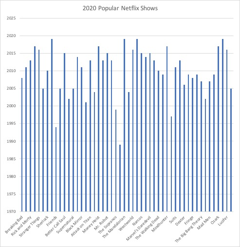

People ranging from high school aged all the way to grandparents are familiar with, if not fans of, the television show Friends. The show first aired in 1994, before many current fans were even born, so why is it so popular? Evidence shows that Friends was first popular because of the relatability to the characters, as well as the undeniable comedy in each episode. Today, it maintains its popularity because that type of comedy is few and far between, along with the nostalgia factor that has become more important in 2020 during a stressful and uncertain time.
Friends originally gained a giant following because of its unique take on a sitcom that made it unlike any other show on television at the time. According to an article from the New York Times, “Tens of millions of Americans watched all of that writing and directing and acting, all of that seemingly effortless effort, for all 10 of its years. That work and a country’s devotion to it feels like proof of a golden age of something” (Wesley Morris). The article explains that no other sitcom did comedy in such a way as Friends, and no other show had the relatability of complicated friendships like Friends did.
Today, Friends seems to have seeped into the brains of younger generations, and this is partly because of a lack of sitcoms in general. After looking at Trending TV Shows on Netflix dataset found on Kaggle, it is evident that popular shows today are mostly of the drama and crime genres. Out of the dataset of 50 shows, less than 25% of them would be considered comedies. With a heavy production, it is difficult to avoid a good crime show, but it is important to have a relaxing, carefree show to unwind with. Friends acts as that show for today’s Netflix users, with an IMDB rating of 8.9 as of 2020.
The pandemic beginning in early 2020 has arguably increased the human need for comfort and nostalgia, which is likely another reason why Friends is still considered a popular show. A Vogue article by Alexandre Marain outlines reasons for the show’s popularity, two of them being the “iconic 90s style” and “timeless theme song and opening credits”. These aspects bring back happy memories to the show’s original viewers. The Netflix dataset previously mentioned contains data from the middle of 2020, when quarantine was in full effect. As shown in the visualization below, the average airing year of the 50 popular shows in 2020 was approximately 2010.
 It is clear from these sources and the graph that Friends has been incredibly popular since it started airing on television, and has spread to many generations. In an age of crime on tv and uncertainty with public health, Friends is a show anyone can turn on and smile from, whether it be a nostalgic smile or a comedic smile.